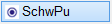
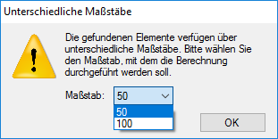
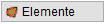
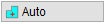
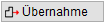

")
")

Berechnung von Massen-, Flächen- oder Volumenschwerpunkten.
|
Hinweise: |
|
·Falls die Kontur des Polygons aus unterschiedlichen Maßstäben besteht, werden Sie nach dem Bestätigen des Polygons in einer Meldung darauf hingewiesen. Ihnen werden alle gefundenen Maßstäbe angezeigt, sodass Sie für die Massenberechnung den korrekten Maßstab auswählen können. Wählen Sie aus der Dropdown-Liste den gewünschten Maßstab und bestätigen Sie mit OK. Achtung! Der im Dialog gewählte Maßstab wird nur für die Berechnung verwendet. Die ursprünglichen Maßstäbe der Elemente werden nicht geändert!  ·Achten Sie auf die Eingabe korrekter Werte. Die Berechnung des Schwerpunktes verläuft im Programmhintergrund. Es werden keine Zwischenergebnisse angezeigt. |

1.Polygon(e) abstecken
§Klicken Sie den Schwerpunktstyp an, den Sie berechnen möchten. [Schwerpunktstyp].
§Wählen Sie unterhalb der Abfrage, wie Sie den Schwerpunkt definieren wollen.
|
Punkte anklicken: Bestimmung des Schwerpunkts durch Anklicken von Zeichnungspunkten. Klicken Sie die gewünschten Zeichnungspunkte nacheinander an. Wenn Sie den ersten Punkt wieder anklicken, wird die Fläche geschlossen. [Klicken Sie Punkte an]. Tipp: Mit einem Rechtsklick werden der erste und letzte Punkt automatisch miteinander verbunden. |
 |
Elemente anklicken: Bestimmung des Schwerpunkts durch Anklicken von Elementen. Klicken Sie die gewünschten Elemente nacheinander an und bestätigen Sie die Auswahl durch Rechtsklick. [Klicken Sie Elemente an]. |
 |
In ein Polygon klicken: Auswahl einer in der Zeichnung vorhandenen, geschlossenen Form (aus Linien und/oder Kreisen). Klicken Sie in eine geschlossene Form. [Punkt wählen]. |
 |
Massentext anklicken und Werte übernehmen: Angaben aus einer frei platzierten Massen-Angabe, einem Schwerpunkt oder aus einem Raumstempel übernehmen. [Massentext auswählen]. Klicken Sie eine frei platzierte Massen-Angabe (Fläche, Länge, Volumen, Gewicht), einen Schwerpunkt oder einen Raumstempel an. Folgen Sie der Abfrage, um weitere Massen-Angaben zu ermitteln und diese zu addieren oder zu subtrahieren. |

2.Schwerpunkt ermitteln

§Geben Sie die Höhe ein und bestätigen Sie mit der Eingabetaste. [Dicke]. Alternativ können Sie die Höhe aus der Zeichnung abgreifen. Klicken Sie dazu unterhalb der Abfrage auf [Aus Zeichnung], wählen Sie eine der Optionen und folgen Sie der Abfrage:
Sie können die Eingabe jederzeit abbrechen, indem Sie auf Abbruch klicken oder die Esc-Taste drücken. §Geben Sie unter Gamma [kN/m3] die Eigenlast ein und bestätigen Sie mit der Eingabetaste. §Um die Teilfläche positiv anzusetzen, klicken Sie unterhalb der Abfrage auf [+Add] oder klicken Sie [-Sub] für eine negativ angesetzte Teilfläche. [Positiv + Negativ -]. Bestätigen Sie mit Rechtsklick. Sie können sofort einen weiteren Flächenschwerpunkt ermitteln. §Um die Polygoneingabe zu verlassen, drücken Sie die Eingabetaste, Rechtsklick oder Der Schwerpunkt wird auf der Zeichenfläche in Form eines "Kreuzes" dargestellt. Sie können sofort den nächsten Schwerpunkt ermitteln oder eine andere Funktion wählen. |


§Geben Sie die Höhe ein und bestätigen Sie mit der Eingabetaste. [Dicke]. Alternativ können Sie die Höhe aus der Zeichnung abgreifen. Klicken Sie dazu unterhalb der Abfrage auf [Aus Zeichnung], wählen Sie eine der Optionen und folgen Sie der Abfrage:
Sie können die Eingabe jederzeit abbrechen, indem Sie auf Abbruch klicken oder die Esc-Taste drücken. §Um das Teilvolumen positiv anzusetzen, klicken Sie unterhalb der Abfrage auf [+Add] oder klicken Sie [-Sub] für ein negativ angesetztes Teilvolumen. [Positiv + Negativ -]. Bestätigen Sie mit Rechtsklick. Sie können sofort einen weiteren Flächenschwerpunkt ermitteln. §Um die Polygoneingabe zu verlassen, drücken Sie die Eingabetaste, Rechtsklick oder Der Schwerpunkt wird auf der Zeichenfläche in Form eines "Kreuzes" dargestellt. Sie können sofort den nächsten Schwerpunkt ermitteln oder eine andere Funktion wählen. |
§Um die Teilfläche positiv anzusetzen, klicken Sie unterhalb der Abfrage auf [+Add] oder klicken Sie [-Sub] für eine negativ angesetzte Teilfläche. [Positiv + Negativ -]. Bestätigen Sie mit Rechtsklick. Sie können sofort einen weiteren Flächenschwerpunkt ermitteln. §Um die Polygoneingabe zu verlassen, drücken Sie die Eingabetaste, Rechtsklick oder Der Schwerpunkt wird auf der Zeichenfläche in Form eines "Kreuzes" dargestellt. Sie können sofort den nächsten Schwerpunkt ermitteln oder eine andere Funktion wählen. |
Zugehörige Referenzen: